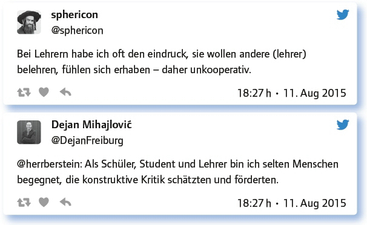
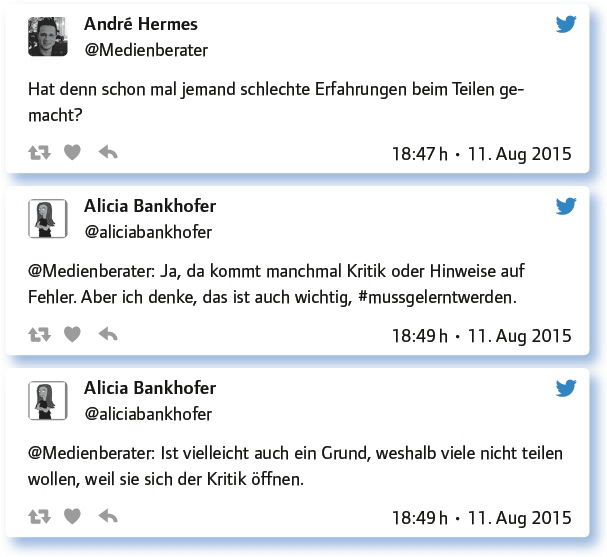

2.4
Wie durchbreche ich das Einzelkämpfertum an meiner Schule? (#EDchatDE Summer-Special vom 11. August 2015)
von Peter Ringeisen
Während Teamarbeit in der Wirtschaft einen hohen Stellenwert hat, handeln viele Lehrpersonen immer noch als Einzelkämpfer: Sie gewähren Kollegen keinen Einblick in ihre Vorbereitung oder ihren Unterricht, sie behalten ihre – mühsam allein erstellten – Arbeitsblätter für sich, statt sie mit Kollegen zu teilen, sie geben sich große Mühe, entstehende Probleme allein zu lösen, statt sie mit Kollegen zu diskutieren und, wo möglich, auch mit Kollegen zusammen zu lösen.
Diese verbreitete und nachgerade unvernünftige Ausgangslage brachte @ju_hu_ und @daniel11007 auf die Idee, dieses Thema in einem Summer-Special anzubieten.
In welchen Bereichen gibt es Einzelkämpfertum an deiner Schule? Wo gibt es Zusammenarbeit?
Zunächst wurde um erste Stellungnahmen gebeten. Es wurde deutlich, dass es vor allem bei Verwaltungsaufgaben funktionierende Mitarbeit gibt, doch wenn es an den eigentlichen Unterricht geht, wurde es schwierig. – Aber irgendwie musste es doch möglich sein, denn stellenweise gab es ja Kooperation. Also hatten die Betreffenden einen gangbaren Weg gefunden.
(Wie) kann man andere überzeugen?
Mit dieser Frage erhoffte man sich eine Wegbeschreibung. Erstens, so zeigten die Antworten, durch gutes Beispiel: den ersten Schritt machen, gutes Material anbieten und weitergeben. Zweitens, sich auf die Kolleginnen und Kollegen konzentrieren, die für eine Kultur des Teilens offen sind.
Von Vorteilen des Materialaustausches überzeugen. Arbeiten im Team spart Zeit!
Ich konzentriere mich nächstes Jahr auf die bright spots. Man kann wenige anstecken, sie tragen‘s weiter.
Andere überzeugen? Nur, wenn Bereitschaft vorhanden ist, sich überzeugen zu lassen. Da fehlt es.
Eigene Kultur der Kooperation an der Schule anfangen. Eine/r muss anfangen.
Gar nicht. Lehrer, die nicht zusammenarbeiten wollen, haben ihre Gründe. IMHO: Unsicherheit, Mangel an Selbstkritik/Offenheit.
Im Folgenden beschäftigte sich die #EDchatDE-Community mit den Ursachen für das Phänomen des „Allein-Arbeiters“:
Lehrerpersönlichkeit! Begünstigt Studium & Arbeit an der Schule „Einzelkämpfertum“? Sanktionen von Schulleitung, Kollegen?
Kollegiale Zusammenarbeit anstiften?!: Vorschläge zur Unterrichtsentwicklung im Großen? Material- und Methodenaustausch im Kleinen?
Diese Frage stellte eine Vertiefung der zweiten Frage dar. Eine Reihe von Beiträgen zeigte, dass Teilen von Material und Ideen als guter Ansatzpunkt für Gegenseitigkeit gesehen wurde. Ein interessanter neuer Gedanke war, mit anderen zusammen eine Fortbildung zu besuchen und die Erkenntnisse und Anregungen daraus dann hinterher gemeinsam umzusetzen.
Antworte auf 3 Tweets unterschiedlicher Teilgeberinnen a) zustimmend, b) kritisch, c) provozierend!
Die Antworten drehten sich oft darum, weshalb Kooperation für „typische“ Lehrer schwierig sei.

Nun wollten die Moderatoren des Summer-Specials wissen, ob es besonders schwierig sei, auf dem Gebiet der digitalen Medien Zusammenarbeit zu erreichen. Die verschiedenen Antworten zeigten, dass eine Verallgemeinerung hier nicht sinnvoll ist – zu unterschiedlich seien die Voraussetzungen. Aber bei vielen brauche man Geduld und gute Argumente, um die Vorteile einer Zusammenarbeit beispielsweise auf einer gemeinsamen Plattform zu erläutern.
Ist eine besondere Überzeugungsarbeit beim Thema „Digitale Medien“ erforderlich?
Überzeugen nötig, v. a. hinsichtlich Mehrwert. Arbeitsbelastung! Digitale Unkenntnis! Schultechnik! …
Nicht mehr oder weniger als bei anderen Themen. Eine Schule, die offene Debatten nicht scheut, arbeitet immer fortschrittlich.
Yup. Manche sind ‚digitale Demenz‘ Anhänger, manche haben nicht mal privat einen Computer. NULL Digi-Erfahrung = VIEL Geduld.
Die OER-Idee braucht Anlaufszeit. Man möchte das Beste nicht „verschenken“ und hat anderseits Angst, sich zu blamieren.
Kohle!? Spielen Rahmenbedingungen für gelingende Kooperation gar keine Rolle?
Die Teilgeber arbeiteten heraus, dass äußere Bedingungen nicht unwichtig sind, aber noch wichtiger ist für sie die Bereitschaft zur Kooperation. Alicia Bankhofer legt allen ein Video ans Herz, das sie sich ansehen sollten, nämlich: „Olaf-Axel Burow: Mit Team-Flow zum Erfolg“.

Welche Anregungen, Fragen hast du sonst noch zum Thema „Einzelkämpfertum“?
Zum Schluss kam noch ein wichtiger Aspekt zur Sprache, der bei den Ursachen für die verbreitete „Allein-Arbeit“ von Lehrkräften vorher nicht genannt wurde: Die Befürchtung, den Ansprüchen der Kollegen nicht zu genügen. Wenn man Unterrichtsmaterial und -ideen weitergibt, macht man sich gleichzeitig angreifbar – doch dies könne ein guter Startpunkt für eine Diskussion sein. Aus Kritik könne man ja auch lernen. Wer sich der Kritik öffnet und lernt, flexibel und unaufgeregt damit umzugehen, bleibt mit dem Kollegen im Gespräch.

Fazit:
Zusammenarbeit im Kollegium spart nicht nur dem Einzelnen Arbeit, sondern sie sorgt insgesamt für eine bessere Schulatmosphäre. Schüler merken es, wenn ihre Lehrkräfte zusammenarbeiten und sich über Inhalte und Ziele ihres Unterrichts absprechen, und sie bekommen auch auf diese Weise vermittelt, dass sie und ihr Fortschritt den Lehrerinnen und Lehrern wichtig sind.
Weiteres zum Thema:
25. #EDchatDE, „OER in der Schule inkl. Linkliste“: https://edchatde.wordpress.com/2014/03/17/zur-vorbereitung-des-25-edchatde-oer-in-der-schule-inkl-linkliste/
64. #EDchatDE, „Schulkultur: Wettbewerb oder Kooperation?“: https://edchatde.wordpress.com/2015/01/19/zur-vorbereitung-des-64-edchatde-schulkultur-wettbewerb-oder-kooperation/
Link zum vollständigen Protokoll: